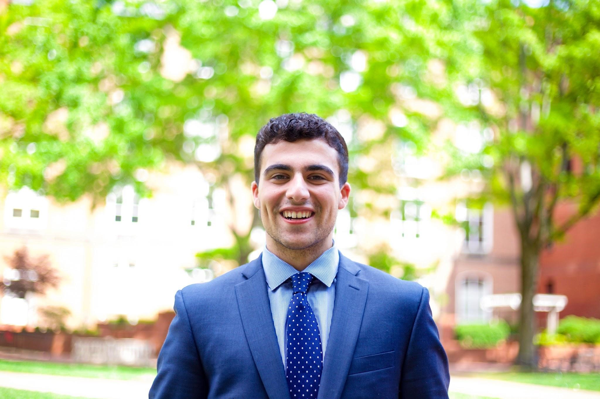
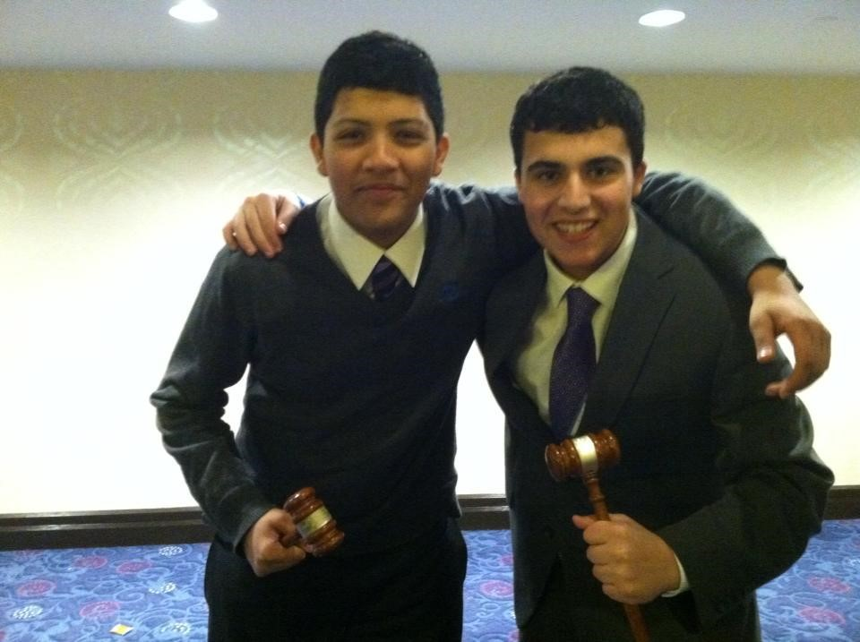

Secretariat Spotlight: Austin Meo

During his sophomore year of high school, Austin Meo traveled from his hometown of Princeton Junction, New Jersey to attend WAMUNC for the first time and participate as a delegate in the Joint Crisis Committee on the Political Struggle for Dharistan. Five years later, Meo is now the Chief of Staff for WAMUNC XX.
After falling in love with WAMUNC and Washington, D.C. as a high school student, Meo decided to apply to GW in the hopes that he could remain active in the conference throughout his college career. Following his position as Vice Chair of DISEC his freshman year, Meo served as Under Secretary General of Regional Bodies and Councils for WAMUNC XIX. He has used his various positions as opportunities to provide delegates with the same great experience he had as a high school student.
“I wanted to be on WAMUNC Secretariat to give back to a conference and group of people that have given a lot to me as a delegate,” Meo said. “In all honesty, I believe we, as staff, get just as much out of the conference as the delegates. You learn so much about leadership and how to motivate the younger generation.”
Meo is now a junior at GW double majoring in Political Science and Criminal Justice in the Columbian School of Arts and Sciences. In addition to WAMUNC, Meo serves as the Executive Vice President of the Residence Hall Association. Meo is also a Disabled Students Services volunteer and has worked in the STAR program, giving tours on both the Foggy Bottom and Mount Vernon campuses of GW.
Despite the amount of work required to plan WAMUNC, Meo recognizes that what makes the conference run so smoothly is that everyone on Secretariat maintains a positive attitude. Meo attempts to share this mindset with others, providing comic relief and serving as a resource for the delegates and advisors beyond the daily conference activities.
“I think when you staff WAMUNC, you have to realize that it’s not just about what goes on in the committee session,” Meo said. “For many delegates, this is their first time being away from home or for some even coming to the U.S. As a staffer, I really enjoy just being there for the delegates and advisors and making sure they have a good time.”
As Meo transitions into his new role as Chief of Staff, he is looking forward to another year working with Secretariat and managing the staff.
“I'm looking forward to being Chief of Staff because while it is a big role, it’s also an opportunity for me to grow as a leader and to help improve our staffing philosophy as a whole,” Meo said. “I truly believe our 200+ all-student staff is the best in the country and I'm looking forward to helping them improve the conference in any way I can.”
Having experienced WAMUNC both as a delegate and member of Secretariat, Meo recognizes the importance of the conference in shaping future leaders. For Meo, WAMUNC is an opportunity for delegates from around the world to engage in substantive discussions about relevant issues. 
“WAMUNC to me is all about respect, diversity, and helping the future leaders of the world tackle some our biggest problems and questions,” Meo said. “I think being in the center of our nation's capitol, where similar debates are held right here in The White House, The Supreme Court and Capitol Hill, is an experience unlike any other.”
This article was written by Assistant Director of Public Relations Celine Castronuovo.
Press inquiries can be directed to Director of Public Relations Kellie Bancalari at pr@wamunc.com.